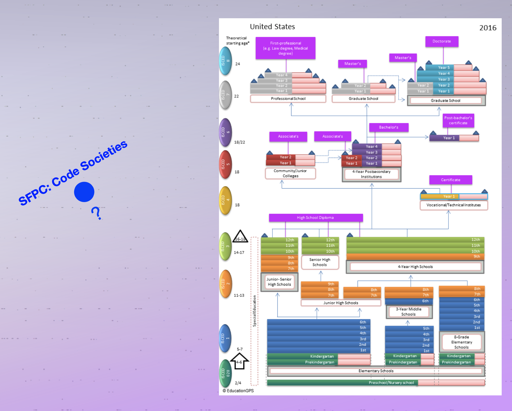
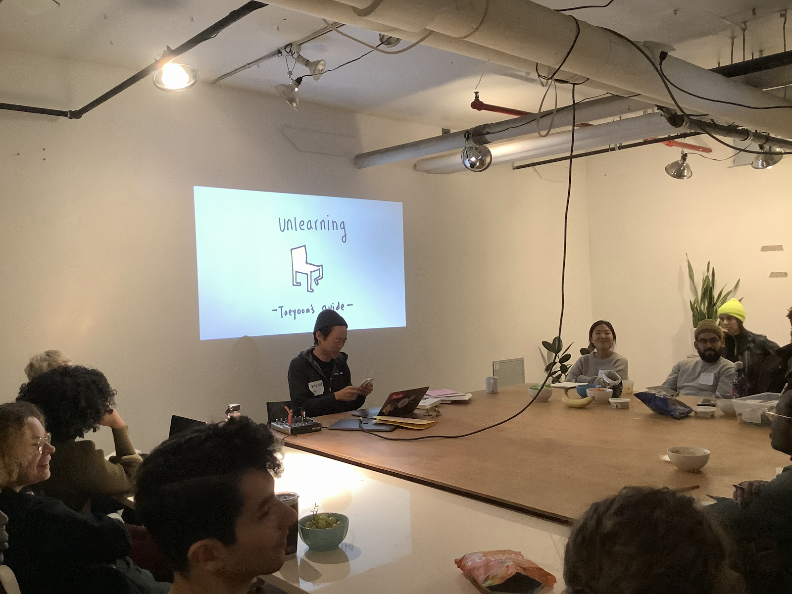

We’ve waited for Day 1 since we got news of our acceptance. You could feel the excitement and jitters an hour before class during the ‘meet & greet’ portion. Each of us had an idea of what we signed up for, but we didn’t really know, you know? Thankfully, our lead organizer and teacher, Melanie Hoff, and assistant organizers and teachers, Neta Bomani & Emma Rae Norton, guided us with grace and ease into the experience.
We began with movement (think: ice breaker). The idea of shifting your body next to a temporary stranger’s body may seem discomforting.
Stay with me while I jump to what Neta said toward the end of class:
“There is a difference between discomfort and safety.” Cue “safer spaces.” A convenient realm of existence for those appearing or thinking they are dismantling systems of domination. They’re not the same and we should approach each session discerning whether it is discomfort (our privilege being checked/challenged) or safety (“my physical body is at risk”) that we’re feeling.
The response to the last movement prompt, “is it possible to have a spiritual relationship with computers?”, I gave a glaring look as to who was standing where in the room. Overwhelmingly many agreed. Yes, it is possible. Andreas got some finger-snaps when they said, “if a prayer is poetry and an algorithm can be poetry, then can an algorithm be a prayer?”
I know, right? But then, me being me (a person coming from a non-technical background, specifically) I added my uncertainty of whether or not I would want to allow technology into my intimate spiritual life. That, too, was also welcomed and finger-snapped.
Once we got our bodies and minds warm, Melanie expanded on our imagined expectations of Code Societies. The meaning is in the name.
How do we code societies and how are societies shaped by code? How do they inform each other? To begin this exploration, Melanie laid out three specific meanings of code: computational code, social/societal code, and legal code. Here are my notes of each:
computational. determines the algorithms that mediate your relationships, decides who’s your doctor, the traffic lights, etc.
social. social conventions we communicatively operate under (gender, race), eye contact, a smile, - how we respond to them.
legal. deciding who’s considered a citizen, who can buy property, legal codes codified by social codes (for example who can marry who).
It’s good to separate them then look at them equally.
At Code Societies, the aim will be to begin forming liberatory relationships with computational code. Ultimately, how can we operate under other systems of power that will impact our ability to change our immediate world? Then, how do we apply it to larger systems? It will be in our ability to move with grace between many kinds of code. I loved how Melanie put it: "To move fluidly and with intention between codes of many kinds is a path towards living in the society you want to live in. The ultimate work of Code Societies is hidden the verb-ing of the name; a prompt to code the societies that breathe with you, that opens you up instead of clamps you down."
I know, right? So good. Thank you Melanie.
By the way, here’s
a moment
I felt safe at SPFC:
As a person with ancestral his/herstories of displacement, I also appreciated the acknowledgement of where we were in terms of land occupation. What we know today as Manhattan, New York City, New York, etc. is Lenape land and that the only true way to pay homage to our indigenous family is by ‘paying rent’ as Neta says. Melanie donated a portion of her salary from SFPC to the Lenape Center.
Looking in at the School of Poetic Computation, how it works and who is part of it, we learned that SFPC is some kind of its own magic. That is, power dynamics at SFPC are just that, dynamic. They’re created and maintained by the people who share the space and not an obscure, governing body. Our roles/identities: student, teacher or participant, resident, can change because we are all bringing something to the table. We are all learning, creating and teaching, together. SFPC is an open conversation. This is completely opposite to the rigid, one can say coercive, educational system in the US. It is one that pipelines our life and takes hold of our future by dictating where some people will learn and how much they will learn. It does not leave room for interpersonal experiences because it is meant to control masses of people. In this way, we are tasked to consider the following:
For those of us experiencing tensions with code or a piece of technology, it’s helpful to know there is nothing wrong with us. In fact, what’s wrong is the way we were taught or encouraged to use the technology or the actual technology itself. What will happen over the course of the next three weeks, meaning the patterns, communications, and habits we establish and develop, will ultimately code our new intimate little society. We will have to ask ourselves, “Is this a society I want to be a part of?”
Melanie led us through a conceptual blending activity and gave us glimpses into previous Code Societies sessions projects (Jarret Bryant, Emily Saltz, Nadja Oertelt) which was super helpful to imagine the vast curiosities available to us. We got to learn more about what makes Melanie, Neta, Emma and Taeyoon so special. Taeyoon shared some hxstory of what makes the Westbeth Gallery, where SFPC lives, so special. He also gave us some of his thoughts on the act of un/learning. I’ll close on this since it’s worth a share. Here are my notes (a poem, if you will):

want to
focus
on learning
lifelong learner
shares process,
learner = student,
to learn is to live an active life
change knowledge production
from inside out
(being embedded)
act of humility = choosing to learn
when no longer required to do so
Claudia Rankine
TO WRITE TO LEARN IS TO FIGHT!!!
relations
network
let’s not separate the two.